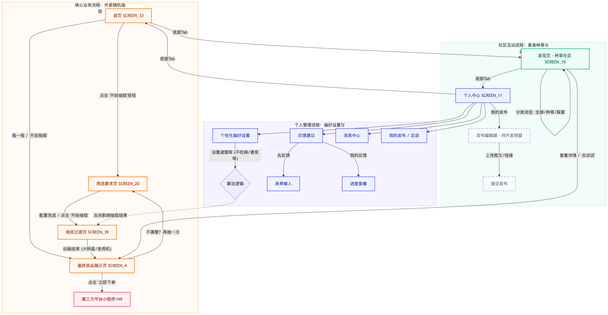
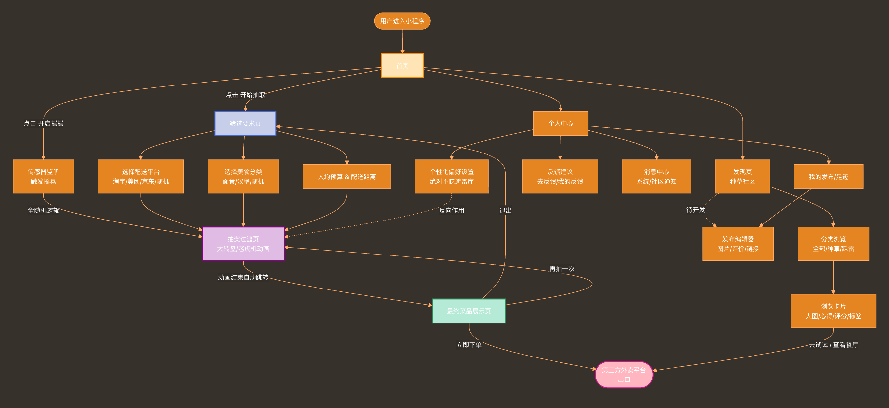

| 版本号 | 修订日期 | 修订内容 | 修订人 |
|---|---|---|---|
| V1.0 | 2026-05-12 | 初版编写 | 董事 |
本文档为"替你选"微信小程序的完整产品需求文档，面向对象为招聘方（HR/面试官），旨在系统化展示产品的需求背景、目标用户、核心逻辑与功能设计，体现产品思维的系统化、逻辑严密性与可落地性。
一款帮助00后大学生和上班族解决"吃什么"决策困难的微信小程序——通过硬性筛选 + 个性化避雷 + 随机加权算法，将选择焦虑转化为盲盒式抽奖体验。
• 用户痛点：外卖平台SKU爆炸，用户每天面对"吃什么"的选择疲劳，决策时间过长；
• 市场空白：现有外卖平台强调"搜索"和"浏览"，缺少专门针对"决策困难群体"的轻量工具；
• 行为趋势：盲盒、随机抽奖类玩法在Z世代中接受度极高，将"选择困难"转化为"惊喜体验"存在心理契合点。
核心用户群：00后大学生 + 初入职场上班族
| 维度 | 描述 |
|---|---|
| 年龄范围 | 18-26岁 |
| 经济水平 | 月生活费2k以下（学生）/ 月薪6k以下（上班族） |
| 核心特征 | 对饮食有一定要求但选择困难，习惯外卖消费，对轻量工具接受度高 |
| 使用场景 | 午/晚饭前打开小程序，希望快速得到"今天吃什么"的答案 |
用户故事示例：
• *用户故事1*：小张，大二学生，每天中午打开外卖App刷20分钟不知道吃什么，最后经常将就点同一家。—— 他需要的是一个10秒内帮他做决定的工具。
• *用户故事2*：小李，毕业一年的上班族，加班后不想思考晚饭，但又有忌口（不吃香菜、不吃辣），希望有个工具即"懂他的雷区"又能快速推荐。
| 用户痛点 | 替选方案 |
|---|---|
| 外卖选择过多，决策疲劳 | 算法代劳，一键抽取，3秒出结果 |
| 抽到的可能是不喜欢/忌口的 | 个人避雷库强制拦截，结果可控 |
| 纯工具用完即走，留存低 | 社区种草/踩雷 UGC 生态增强粘性 |
| 传统推荐缺乏惊喜感 | 盲盒式随机抽取 + 动画反馈 |
替你选
├── 核心抽奖工具
│ ├── 常规精准抽取（设置平台→分类→预算→距离→抽奖→展示）
│ ├── 极简全随机（摇一摇→自动抽取→展示）
│ └── 结果操作（立即下单 / 不满意再抽一次）
├── 社区互动
│ ├── 发现页（种草/踩雷卡片浏览）
│ ├── 详情查看 + 反向引流至抽奖
│ └── 发布编辑器（规划中）
└── 个人中心
├── 避雷库管理（核心：反向控制算法）
├── 历史足迹
├── 个性化偏好设置
└── 反馈与建议

两条主路径说明：
• 路径A（常规模式）：首页 → 筛选要求页（选平台/分类/预算/距离）→ 抽奖动画 → 结果页 → 跳转美团/饿了么下单
• 路径B（趣味模式）：首页 → 摇一摇 → 绕过精细筛选（仅保留营业状态+避雷库+默认5km）→ 动画 → 结果页
解决的核心矛盾：在保证结果"可接受"的前提下最小化用户决策成本，同时保留惊喜感。
第一阶段：硬性过滤（Hard Filtering）
两条不可动摇的红线，所有后续逻辑的基础保障：
• 营业状态过滤：自动剔除未营业/已售罄商家（对接商家状态API）
• 避雷库拦截：根据用户个人中心维护的关键词（如"香菜""不吃辣""不要海鲜"），强制过滤匹配菜品
外加用户即时设置的软性参数：配送距离上限、预算价格区间。
第二阶段：条件自动放宽（Fallback Strategy）
触发条件：候选池结果 < 3个 或为 0。
| 放宽顺序 | 动作 | 示例 |
|---|---|---|
| 优先级1 | 扩大分类范围 | "面食" → "所有主食" → "不限" |
| 优先级2 | 上浮预算限制 | 预算20元 → 22-24元（上浮10%-20%） |
| 优先级3 | 扩大距离范围 | 3km → 4-5km（增加1-2km） |
注意：无论放宽到何种程度，营业状态和避雷库标签始终不可动摇。
第三阶段：权重计算（Weight Scoring）
对放宽后的候选池中每个结果进行综合打分：
| 影响方向 | 权重因子 | 数据来源 |
|---|---|---|
| 加分 | 社区"种草"数高 | 社区UGC数据 |
| 加分 | 用户历史足迹中点赞过的分类 | 用户行为数据 |
| 加分 | 符合当前时段的热门品类 | 时段-品类关联 |
| 减分 | 社区"踩雷"反馈多 | 社区UGC数据 |
| 减分 | 近期用户频繁点击"不满意" | Session行为数据 |
| 加分 | 用户历史订单中多次（>=3次）出现的分类 | 用户历史订单数据 |
第四阶段：随机触发与负反馈
• 在高权重候选池中执行伪随机抽取
• 若用户点击"不满意，再抽一次"，将刚抽中的结果及其同类标签在当前Session中的权重暂时降为零
• 实现类似"摇一摇换一批"的流畅连续体验
这是产品区别于普通随机工具的核心差异化设计。避雷库不是简单的黑名单过滤，而是一个持续生长的个性化数据资产——用户维护得越久，推荐越精准，迁移成本越高，天然形成留存壁垒。
| 功能模块 | 优先级 | 说明 |
|---|---|---|
| 常规精准抽取（含筛选页+动画+结果页） | P0 | 核心体验闭环 |
| 极简全随机（摇一摇） | P0 | 趣味模式，差异化亮点 |
| 第三方外卖平台跳转 | P0 | 转化终点 |
| 避雷库管理 | P0 | 算法基石 |
| 负反馈机制（不满意再抽） | P1 | 体验优化 |
| 社区发现页（种草/踩雷浏览） | P1 | UGC生态启动 |
| 美食足迹 | P2 | 历史订单数据沉淀 |
| 发布编辑器（UGC发布） | P3 | 用户发表菜品评价入口 |
模块一：首页（SCREEN_33）
• 用户场景：用户打开小程序，需要一个清晰、低摩擦的行动入口。
• 核心元素：
• 主按钮"开始抽取"（引导进入常规精准路径）
• 摇一摇入口/提示（引导进入极简趣味路径）
• 底部Tab导航：首页 / 发现 / 我的
• 交互说明：
• 点击"开始抽取" → 跳转筛选要求页（SCREEN_20）
• 摇一摇手势触发 → 直接进入抽奖动画（跳过筛选）
模块二：筛选要求页（SCREEN_20）
• 用户场景：用户希望在抽奖前圈定基本范围。
• 筛选项：配送平台（美团/饿了么）、美食分类、预算区间、配送距离
• 交互说明：选择完成后点击"开始抽取" → 进入抽奖过渡动画页
• 默认值策略：所有筛选项均有默认值，允许用户不做任何设置直接抽取
模块三：抽奖过渡动画（SCREEN_39）
• 用户场景：等待结果时的情感峰值，强化盲盒惊喜感。
• 动画形式：大转盘 / 老虎机（任选一种，后续可A/B测试）
• 交互说明：动画播放约2-3秒后自动跳转至最终菜品展示页
模块四：最终菜品展示页（SCREEN_4）
• 用户场景：用户看到抽奖结果，决定是否采纳。
• 展示内容：菜品高清图、名称、价格、配送时间、距离
• 核心操作：
• 点击"立即下单" → 通过微信小程序API跳转至对应外卖平台
• 点击"不满意？再抽一次" → 触发负反馈，返回重新抽取
模块五：发现页 / 社区（SCREEN_10）
• 用户场景：用户浏览他人的种草推荐和踩雷吐槽以及发表个人评价。
• 内容形态：种草卡片 / 踩雷卡片（带图片+简短评价），发布编辑器
• 转化链路：点击卡片 → 查看详情 → 点击"去试试" → 反向引流至抽奖页
• 点击加号→ 编辑评价（文字+图片+标签（种草/踩雷））→ 发布
模块六：个人中心（SCREEN_11）
• 用户场景：用户管理个人偏好，尤其是维护自己的避雷库。
• 核心功能：
• 查看发布过帖子和个人消息
• 避雷库维护（添加/删除过敏食材、不喜品类等关键词标签）—— 这是产品最核心的个性化配置
• 历史订单查看
• 反馈与建议
| 指标 | 目标值 |
|---|---|
| 首屏加载时间 | < 2秒 |
| 抽奖算法响应时间 | < 1秒（含动画缓冲） |
| 接口平均响应时间 | < 500ms |
| 埋点事件 | 说明 |
|---|---|
| page_view（全页面） | 页面PV/UV |
| click_start_draw（首页开始抽取） | 常规路径入口点击率 |
| click_shake_draw（摇一摇触发） | 趣味模式使用率 |
| click_order（立即下单） | 转化核心指标 |
| click_retry（不满意再抽） | 负反馈频率 |
| filter_value（筛选页各项参数） | 用户偏好数据沉淀 |
• 微信版本：最低支持微信 8.0+
• 系统：iOS 14+ / Android 8+
• 屏幕适配：全面适配主流机型（含刘海屏）
| 风险项 | 等级 | 对策 |
|---|---|---|
| 第三方外卖平台跳转不稳定 | 高 | 建立多级平滑降级机制，建立专有的中间层架构集中处理从抽奖结果到第三方落地页的转换逻辑。 |
| 避雷库规则增多致算法延迟 | 中 | 使用Redis缓存热门区域候选池数据 |
| LBS精度不足影响距离筛选 | 中 | 调用微信原生高精度定位接口 |
| 冷启动阶段候选池数据不足 | 中 | 预设默认菜品种子数据覆盖主流商圈 |
| 第三方数据更新 | 高 | 通过官方的CPS(分销)接口获取数据 |
• "替你选"核心逻辑说明书 V2

• "替你选"功能流程图（User Flow）
• “替你选”小程序技术可行性说明书
• “替你选”小程序技术可行性分析报告.docx